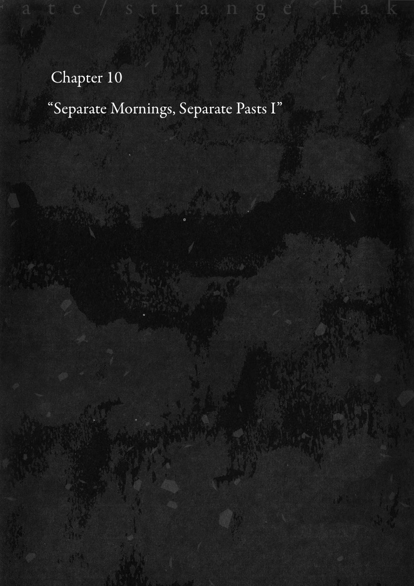
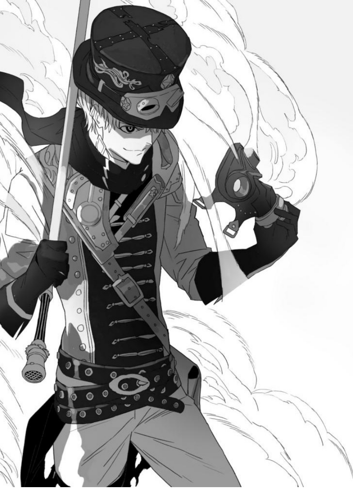
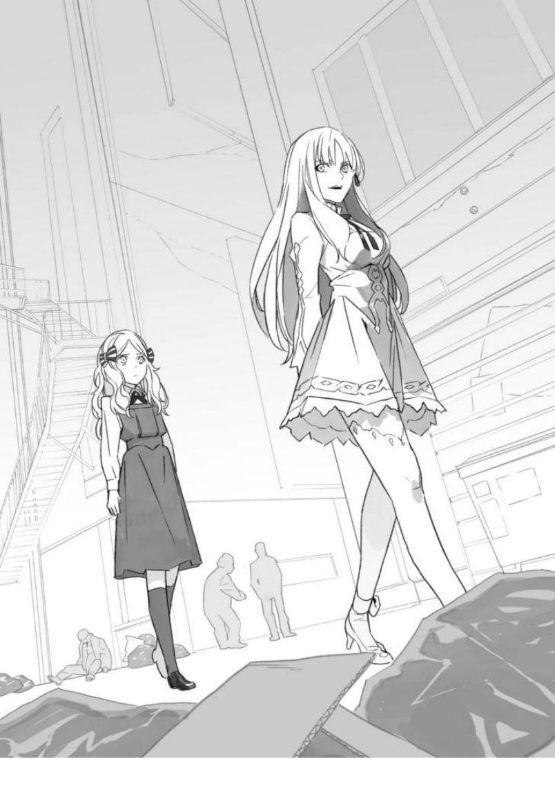
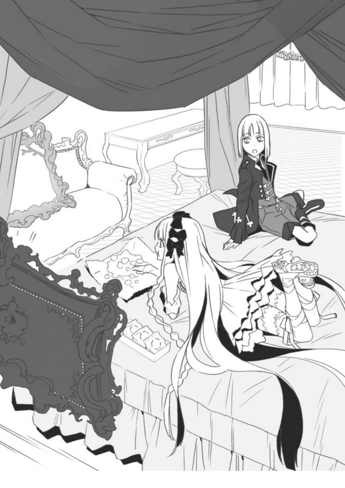

"Manhãs Separadas, Passados Separados I"
Manhãs Separadas, Passados Separados I
Quando Ayaka Sajou acordou, sua mente já estava no meio de uma paisagem distante. Não havia nada de particularmente interessante ali; ela corria por uma planície lisa. Ao longe, conseguia ver uma floresta.
Parecia estar montada num cavalo. Via uma mão coberta por uma manopla segurando as rédeas.
Um sonho?
Percebeu que aquela mão nas rédeas não era sua. Então percebeu também que não conseguia se mover. Sua visão, porém, mudava rápido. Supôs que estivesse compartilhando o ponto de vista de outra pessoa. Devia existir sonho assim.
Apesar de todos os esforços de Ayaka para se convencer do contrário, porém, aquele sonho parecia assustadoramente real.
"Ricardo!" chamou uma voz. "Ei, Ricardo!"
A visão de Ayaka girou. Havia mais de uma dúzia de homens armados a cavalo atrás dela, e um deles aproximava sua montaria. Quando o cavalo parou bem à vista, o jovem cavaleiro de armadura disse:
"Viemos como você pediu, Ricardo, mas pretende mesmo procurar isso? Essa relíquia do Rei Arthur?"
"Claro", respondeu ela — Ricardo — à pergunta do homem. "Finalmente consegui uma pista."
Ayaka sentiu a estranha sensação de palavras saindo por sua boca mesmo sem que ela estivesse falando.
"Você quer dizer a fofoca daquele menestrel bêbado?"
"Exatamente. A verdade se esconde com esperteza bem no fundo das histórias que os menestréis contam quando estão sóbrios. Eu, porém, não levo jeito para decifrar isso. O que dizem quando perdem o juízo é muito mais fácil de entender."
Era um argumento absurdo. Ayaka se espantou ao ver um disparate daqueles sair da própria boca. O jeito de falar, porém, já lhe dizia tudo o que precisava saber.
Ah, então é isso...
Estão me chamando de Ricardo... Eu sou o Saber?
Ayaka enfim entendeu. A extravagância do sonho lhe dava vontade de suspirar. A conversa, porém, seguia adiante com toda naturalidade, sem dar a menor importância aos sentimentos dela.
"Ele só disse que tinha algo a ver com o Rei Arthur; nós nem sabemos o quê. Tempo é o que não falta, então tanto faz para nós, mas você é da realeza. O que quer tanto assim?"
"Ah, qualquer coisa."
"Como assim?"
"Excalibur seria o ideal, mas eu também ficaria satisfeito com Caliburn, ou Rhongomyniad, ou até mesmo com o escudo que dizem que ele usou para matar o Chapalu. Se eu acabar encontrando a entrada de Avalon e conseguir vislumbrar o grande rei em pessoa ou seu mago, só isso já faria minha vida valer a pena."
A voz do homem que parecia ser Ricardo soou com inocência. O jovem ao lado dele abriu um sorriso torto.
"Se as lendas forem verdade, a Excalibur não estaria no fundo de um lago, nos braços de Vivian?"
"Então eu acharei a Dama do Lago e conquistarei sua amizade. Você sabe que dizem que Sir Pelleas trocou votos com uma delas e sobreviveu à Colina de Camlann, não sabe?"
"Ele não era um cavaleiro desgarrado que nem contavam como parte da Távola Redonda? Só viu a oportunidade e fugiu. De qualquer forma, sair procurando pessoalmente relíquias de um herói que talvez nem tenha existido de verdade não é coisa que alguém da realeza devesse fazer."
"Ora, por acaso existe rei ou plebeu quando se trata de admirar uma grande lenda?"
De algum jeito, Saber parece mais infantil do que de costume. Por quê?
Chamavam-no de membro da realeza, mas as pessoas ao redor agiam mais como bons amigos do que como vassalos, e Ricardo não parecia se importar nem um pouco.
"Se de fato encontrarmos o tesouro do Rei Arthur, isso significará que todas aquelas lendas eram verdadeiras. Poderemos provar que aquelas deslumbrantes chansons de geste realmente aconteceram neste chão em que pisamos! Herdamos a terra por onde o Rei dos Cavaleiros e seus homens galoparam! Isso bastaria para me fazer aceitar o meu destino!"
"Então, se eles não existiram, você nunca vai conseguir aceitar? Você nunca fala nada sensato", resmungou o amigo, exasperado, em cima do cavalo. "O que vem depois? Vai nos conduzir numa busca pelo Graal?"
"Isso provavelmente seria tarefa de tolo."
"Por quê? O que isso tem de tão diferente de Excalibur ou Rhongomyniad?"
"Chrétien me contou. O Graal não é algo que se obtém só por procurá-lo; ele escolhe seu possuidor. Os cavaleiros da Távola Redonda que partiram em sua busca só conseguiram alcançá-lo porque a corrente do destino fez com que o Santo Graal os buscasse. Por isso, não podemos buscar o Graal por vontade própria. Tenho certeza de que, se eu continuar perseguindo a glória cavaleiresca, uma razão adequada acabará se apresentando."
Ricardo discorria sobre contos de fadas com ares da mais completa seriedade. O nome próprio que usou provocou uma reação do amigo.
"Chrétien, é? Ouvi dizer mesmo que ele é um remanescente degenerado dos druidas que espiavam o passado..."
"Ah, é verdade que alguns poetas, como ele e Vace, cantam os contos do Rei dos Cavaleiros e de sua Távola Redonda com tanta vividez, e quase com tanta nostalgia, como se tivessem visto os acontecimentos com os próprios olhos. Eu não me surpreenderia se me dissessem que são fadas que vivem mil anos."
"Tanto faz. No fim, a pista sobre a herança de Arthur não veio de Chrétien; veio de um poeta bêbado cujo nome você nem sabe, numa taverna da cidade. Eu simplesmente não entendo por que você acredita nessas lorotas."
"Qualquer pista já me deixa feliz. Ainda não sou rei. É importante que eu estude os rastros do Rei dos Cavaleiros enquanto ainda sou livre, não acha?"
Ayaka não conseguia vê-los do seu ângulo, mas os olhos de Ricardo provavelmente brilhavam. Ela conseguia imaginá-lo com uma expressão infantil, e foi então, no instante em que sua atenção acompanhou a mudança do ponto de vista de Ricardo rumo à planície, que viu algo estranho.
"Enquanto ainda é livre? Você praticamente já é o senhor da Aquitânia... O que foi, Ricardo?"
"...Alguma coisa está vindo."
Era apenas um ponto na planície lisa. A nuvem de poeira que se erguia atrás dele, porém, denunciava que avançava em disparada. A princípio, Ayaka achou que fosse um cavalo correndo pelo campo aberto, mas o tamanho não batia. Logo, um estrondo que parecia vir dele chegou até eles, e os cavaleiros ao redor começaram a entrar em pânico.
"O que é aquilo, um javali gigante?"
"Uma carruagem...? Não, não há cavalos... Nunca vi nada assim. Aquilo tem pernas? Como corre? Se é uma besta, nunca ouvi um urro desses!"
"Olhem, está vindo para cá!"
"Que velocidade! Corra, Ricardo!"
Ricardo ignorou os companheiros, que já puxavam as rédeas.
"Fascinante..." Sua voz soava calma. "Pode ser um descendente de Twrch Trwyth."
Mais palavras que eu não conheço.
Ainda assim, Ayaka não se sentiu especialmente nervosa. Em parte por causa da segurança na voz de Ricardo. Mas, principalmente, porque reconheceu a coisa que vinha em direção a eles, ainda que com um formato um pouco diferente da versão moderna com que estava acostumada.
A coisa vinha desacelerando à medida que se aproximava de Ricardo. Depois de mais alguns rugidos bestiais, parou por completo a vários metros dele.
"O que é isso...?"
O homem que permanecera ao lado de Ricardo até o fim fitava desconfiado a "coisa". Provavelmente estava pronto para se colocar entre ela e Ricardo, caso fosse preciso.
"...Uma carruagem de ferro?"
"As rodas são bem grossas. E aquele negócio preto? Algum tipo de couro?"
Ao ouvir a curiosidade na voz de Ricardo, Ayaka teve um estalo.
Ah, já sei. Então isso é da época em que Ricardo estava vivo... né?
Se fosse esse o caso, dava para entender o jeito engraçado como falavam. Ayaka também decidiu que aquilo realmente devia ser um sonho.
Mas que sonho esquisito. Quer dizer, todo mundo está falando japonês.
Se aquilo realmente fosse o mundo do passado, então a coisa parada diante de Ricardo e dos amigos dele seria totalmente impossível. Seu corpo era decorado com engrenagens steampunk e farpas de ferro de aparência gótica, formando uma silhueta vistosa e distorcida.
Ayaka sabia como aquilo se chamava.
Um carro... Deve ser customizado.
Diante de um automóvel que parecia saído direto de um filme de ação, Ayaka se perguntou em que tipo de estado mental estaria para produzir um sonho daqueles.
Bom, desde que atravessei o deserto até chegar a Snowfield eu só me meto com cavaleiros e reis, então acho que acabei embaralhando todas as épocas na cabeça...
Enquanto Ayaka refletia, a situação à sua frente começou a mudar.
Um som de pancadas surgiu do lado de dentro da porta do carro. Os cavaleiros sacaram as espadas com cautela e cercaram o veículo.
No instante seguinte, a porta — aparentemente mal encaixada — foi chutada de dentro para fora, e um homem apareceu. Em seguida, as janelas do "carro" foram se abrindo uma a uma, revelando coisas parecidas com instrumentos musicais, que começaram a tocar uma melodia torcida e cacofônica. Contra aquele pano de fundo barulhento, uma voz animada ecoou.
"Alô, jovem senhor da Aquitânia e seus alegres companheiros! Como vão? Eu vou muito bem, mas me rendo. Desisto e tudo mais. Então, será que poderiam guardar essas espadas por enquanto?"
O homem que fez esse discurso despreocupado com ambas as mãos erguidas estava vestido de modo a rivalizar com o próprio carro — ou até superá-lo — em extravagância. Usava roupas vistosas de nobre cujo colorido o fazia parecer mais um bobo da corte do que alguém da realeza. Um chapéu estranho repousava sobre sua cabeça. As engrenagens que adornavam o cajado em sua mão giravam emitindo um ruído distorcido, provavelmente graças ao funcionamento de algum mecanismo.
A visão dele fez Ayaka ter certeza de que aquilo era, sim, um sonho. Tudo o mais que ela vira até ali parecia pertencer a um mundo esteticamente unificado. Ela chegara a pensar que talvez estivesse recebendo um vislumbre genuíno da era em que cavaleiros lutavam a cavalo, mas a aparição repentina daquele homem estragara o efeito de um jeito que beirava o ridículo.
"Ora essa", continuou o homem bizarro, dirigindo-se aos cavaleiros que ainda não haviam baixado as espadas. "Vocês não conhecem as palavras 'amor' e 'paz'? Erguer as duas mãos é um gesto de rendição... Ou isso não existe na cultura desta época? Posso agitar uma bandeira branca, se preferirem. Bem, tanto faz. De qualquer modo, estou desarmado. Não sou hostil. Na verdade, tenho o mais alto respeito por vocês: aceitaram sem hesitar a armadilha que preparei e ainda vieram até este campo vazio."
"Uma armadilha!"
"Ah, droga. Acabei deixando escapar que arranjei sozinho aquele poeta bêbado da taverna. Mas não faz mal. Afinal, vocês vieram mesmo, então meu plano foi um sucesso! Eu consegui!"
Ao ouvir aquilo, os cavaleiros apertaram ainda mais as espadas e foram fechando lentamente o círculo. O homem de ares bufonescos deu de ombros.
"Ora, ora", disse ele, batendo o cajado no próprio ombro, "tentem ser um pouco mais abertos. Até mesmo Alexandre III resolveu se divertir um pouco quando uma figura nova, marcante e excêntrica como eu surgiu diante de seus olhos, sabiam?"
"Chega de bobagens!"
"Esperem."
Ayaka viu o braço de Ricardo deter os cavaleiros irritados.
"Que história é essa de Alexandre, o Grande?"
"Ricardo! Ficar ouvindo um sujeito suspeito desses..."
"Ele não é o Rei dos Cavaleiros, a quem eu venero", disse Ricardo ao homem estranho enquanto continha com uma das mãos o amigo que tentava detê-lo, "mas, se você menciona esse grande rei conquistador para estabelecer uma comparação, então preciso ouvi-lo, não importa que história mirabolante me conte. Não é mesmo?"
Em seguida, Ricardo cruzou os braços diante do excêntrico e declarou com ares de dignidade: "Pode continuar. Antes de tudo, quem exatamente é você?"
O homem misterioso abriu um sorriso alegre, subiu no próprio carro customizado para ficar olhando de cima para os cavaleiros e cantou o próprio nome com voz clara e vibrante.
"Admirável escuta! Meu nome é Saint-Germain! Saint-Germain! Não me importo se você fizer uma pausa em Saint, mas relaxe e una tudo — Saint-Germain! Sim, Saint-Germain! O hedonista de nome Saint-Germain acaba de surgir diante de um grande rei do futuro! É motivo de comemoração... ou pelo menos é para mim!"
"Você ousa ficar acima de Ricardo sabendo que ele é da realeza?" gritaram alguns dos companheiros de Ricardo, mas não pareciam exatamente furiosos. Provavelmente entendiam que Ricardo não dava muita importância ao próprio status.
Bom, todos os cavaleiros aqui também falam com ele de forma bem casual, pensava Ayaka, quando ouviu Ricardo murmurar alguma coisa enquanto olhava para o homem que discursava em cima do carro.
"Oh-ho... Isso rende uma bela cena."
...Pensando no jeito como Ricardo estivera quando começou seu discurso em cima do carro de polícia, Ayaka concluiu que devia estar tendo aquele sonho porque aquela cena ridícula deixara uma impressão forte nela. A constatação, porém, não a ajudou a acordar.
"E então?" A voz de Ricardo ressoou clara em seus ouvidos. "O que é Saint-Germain para mim?"
Ao ouvir isso, e depois de outro brado de "Admirável escuta!", o homem que se chamava Saint-Germain fez uma pose exagerada e começou a falar.
"Serei um poste de sinalização em sua busca para rastrear as histórias dos heróis do passado, um conselheiro para ajudá-lo a farejar ruína, um profeta que anuncia o fim e, às vezes, talvez uma pomba com um ramo de esperança no bico. Esse é o papel que o homem chamado Saint-Germain desempenhará para você."
"Você quer coisa demais. Em resumo, um mago da corte. Acertei?"
"Lamentavelmente, não sou mago. Tampouco sou uma fada, um íncubo, um hematófago, um viajante que recua no tempo ou um Mago que salta entre mundos. Sou apenas um aristocrata e um vigarista."
O homem chamado Saint-Germain girou magnificamente o cajado enquanto prosseguia.
"Portanto, não há necessidade de você se lembrar do meu nome. Não me importo se o esquecer imediatamente. Eu me apresento outra vez. Sou Saint-Germain. Saint-Germain, um nome que você pode muito bem esquecer. Sim, Saint-Germain! Saint-Germain... O nome não importa; isso é o homem chamado Saint-Germain. Saint? Ou Germain?"

"Vamos logo, Ricardo. Cala esse sujeito."
Ricardo não se moveu, ignorando os companheiros que brandiam as espadas outra vez.
"Espere. Se você é um vigarista, eu gostaria de ouvir como pretende me enganar."
Ayaka não conseguia ver, mas de algum modo sabia que os olhos de Ricardo brilhavam como os de uma criança.
"Ha ha. Não sou eu quem vai enganá-lo. Diante do mundo em que você está prestes a pôr os pés — a miríade de mistérios que deu à luz o Rei Arthur — será você quem tentará enganar a si mesmo. Estou aqui apenas para ajudar nessa grande fraude. Em suma, minhas saudações, se nada mais. Um brinde a este momento histórico, em que você entra na lenda."
Saint-Germain desceu do teto do carro, ajoelhou-se reverentemente e fitou o rosto de Ricardo. Seus olhares se encontraram. Antes que Ayaka tivesse tempo de pensar, os lábios de Saint-Germain se moveram.
"E a você atrás dos olhos, meus cumprimentos eternos."
Um arrepio percorreu a espinha de Ayaka. Instintivamente, ela entendeu: as últimas palavras do homem não haviam sido dirigidas a Ricardo, mas à própria Ayaka, que compartilhava sua visão. E, como que para provar isso, Saint-Germain completou com uma frase que não faria sentido para mais ninguém além dela.
"Presumo que esteja espiando do futuro, criança perdida desde sempre."
Foi aí que Ayaka despertou. Seus olhos se fixaram num teto cinzento, e ela percebeu que estava deitada numa cama. Suas costas e as palmas das mãos estavam levemente suadas. Sentia o coração bater acelerado.
"Oh, Ayaka, você acordou? Devia estar exausta para adormecer ainda de óculos."
Ao se virar na direção da voz familiar, viu Saber sentado numa cadeira ao lado da cama, lendo um livro. Mais livros, que provavelmente haviam saído de uma estante próxima, estavam espalhados sobre a mesa à frente dele. O volume em suas mãos naquele momento se chamava A Vida e a Morte do Rei João.
"Também, passei ontem sendo arrastada para todo lado por certa pessoa", resmungou Ayaka, quase sem perceber.
"Se você já está recuperada o bastante para me maltratar, então não tenho com o que me preocupar! Ainda assim, por segurança, devia descansar um pouco mais. Ainda nem amanheceu."
"...Obrigada. E desculpa. Não foi minha intenção reclamar."
Ayaka sentiu nojo de si mesma por ter falado com tanto sarcasmo com alguém que a havia tirado de tantas enrascadas.
"Você não tem nada pelo que se desculpar", respondeu Saber com um sorriso alegre. "É verdade que eu a arrastei por aí, e provavelmente vou continuar arrastando. Além disso, garotas que acordam mal-humoradas são mais encantadoras."
"...Você é mesmo positivo."
Nesse momento, Ayaka se lembrou do "sonho" que acabara de ter. Para um sonho, lembrava-se dele com nitidez demais.
Será que foi mesmo só um sonho?
Seu instinto dizia que não, mas ela tinha medo de confirmar.
"Ainda assim, esta casa tem montanhas de livros. No porão só há grimórios, mas no segundo andar há pilhas de histórias e romances. E também contos heroicos. Não vou ficar entediado."
Ao ver os olhos de Saber brilhando de animação — pelo jeito, passara a noite toda lendo — Ayaka não conseguiu se calar.
"Ei..."
"Sim? O que foi?"
"Você conhece alguém chamado Saint-Germain?" Ayaka esteve a um triz de perguntar, mas travou no último instante. Lembrou-se dos olhos daquele homem estranho, como os vira no fim do sonho, e sentiu medo só de pronunciar seu nome.
Ayaka decidiu tentar outro nome próprio do sonho. Como ela não o conhecia, achou que saber se Saber o reconheceria bastaria para esclarecer se aquilo tinha sido ou não um sonho comum.
"Ei... Você conhece alguém chamado... acho que era Chréti... Chrétien?"
"Chrétien de Troyes? Isso me traz lembranças. Ele era um trovador na corte da minha irmã Marie. Recitou para mim a lenda do Graal mais vezes do que eu podia suportar. ...Desculpe. Não quis mentir, mas acabei de falar uma mentira. Eu é que o importunei para recitar a Busca do Graal centenas de vezes, e nunca me cansei."
"Imagino que ele tenha se cansado..." A atitude meio exasperada de sempre que Ayaka tinha com Saber acabou se impondo sobre sua surpresa pelo rumo natural daquela conversa.
"Ainda assim, você já ouviu falar de Chrétien? Você também gosta dos Cavaleiros da Távola Redonda, Ayaka? Eles não são maravilhosos? Chrétien sempre dizia que eles eram pessoas tortas, fosse como homens, fosse como cavaleiros, mas isso também é parte do que torna a Távola Redonda a melhor de todas!"
Ayaka não sabia praticamente nada sobre os Cavaleiros da Távola Redonda, embora se lembrasse vagamente do nome. Vendo a alegria com que Saber falava deles, porém, estava pronta para aceitar que deviam mesmo ter sido grandes heróis. A fala dele também lhe deu tempo para pensar com calma.
Em outras palavras, aquilo não foi só um sonho... foi?
Realmente, agora que recordava, parecera menos um sonho do que uma cena em primeira pessoa de um filme. Se fosse esse o caso, então alguma interferência mística teria acontecido? Ela considerou consultar Saber sobre o "sonho" para se certificar. Justamente nesse momento, porém, ouviu-se uma batida inoportuna na porta.
"Posso deixá-lo entrar, Ayaka?", perguntou Saber, fechando o livro ao mesmo tempo.
"...Vou deixar isso a seu critério. Não tenho escolha além de confiar nele, afinal."
Saber examinou com cuidado o rosto dela, sem nunca baixar a guarda em relação ao que havia do outro lado da porta, e assentiu.
"Pelo que vejo, você não está com o cabelo bagunçado, nem com remela, e suas roupas estão em ordem. Deve ficar tudo bem!"
"Hã? Ah, é... Tudo bem. Acho."
"Certo. Alô, aí fora", chamou Saber em direção à porta. "Pode entrar."
A maçaneta girou e a porta antiga se abriu devagar.
"Conseguiu dormir um pouco?"
Na soleira estava um jovem cujo rosto parecia novo o bastante para que o chamassem de garoto. Do pescoço para baixo, vestia um traje majoritariamente preto, que lembrava o uniforme de forças especiais, um contraste desconcertante com seus traços juvenis.
"Hum... Sigma, certo?" perguntou Ayaka, sem tirar os olhos da arma no coldre e da faca dele.
Em vez de responder, o rapaz fez uma afirmação desapaixonada.
"Esta casa já está cercada."
Ao mesmo tempo. Num motel barato.
Um motel construído numa estrada pouco movimentada. Ao longe, viam-se os arranha-céus do centro da cidade. Perto do motel, porém, havia poucos edifícios dignos desse nome. Era o tipo de lugar onde se esperaria ver depósitos de materiais abandonados. Ainda assim, mesmo levando tudo isso em conta — e mesmo antes do amanhecer — havia carros e pedestres de menos à vista. Reinava uma quietude tão profunda que parecia que o tempo havia parado.
Naquela quietude, figuras humanas surgiram, como se escorressem para fora da escuridão. Nove homens e mulheres que destoavam no cenário com seus ternos sombrios.
"Varredura concluída", relatou um deles ao homem no centro. "Não há traços de Campo Limitado nem de magia sendo usada nas proximidades, e não há sinais de perturbação na Energia Mágica."
"...É mesmo aqui?" O relatório fez o aparente líder duvidar.
Se suas informações estivessem certas, aquele era o covil de um mago pertencente à infame escola de Magia Moderna da Torre do Relógio — comumente chamada de "Escola El-Melloi".
Era possível que alguém de prestígio suficiente para ser escolhido como Mestre na Guerra do Santo Graal estivesse descansando sem ter sequer um único Campo Limitado erguido? Deviam estar prestes a enfrentar um mago, não algum civil miserável que alguém havia mesmerizado para espionar para si.
A longa experiência de combate do líder o alertou para a possibilidade de estarem entrando numa armadilha. Ele revisou os planos com cautela para que pudessem produzir resultados perfeitos em nome de Zugzwang.
Zugzwang era um grupo de magos formado pela família Einskaya, da Europa Oriental. Tinham começado como subordinados da linhagem Yggdmillennia, sediada na Romênia, encarregados de se livrar rapidamente de qualquer verme que começasse a farejar seus senhores. O poder dos Yggdmillennia, porém, murchara mais de cinquenta anos antes. Com a linhagem dissolvida, Zugzwang se tornara independente e passara a ser uma organização que lidava com todo tipo de serviço obscuro.
Como magos, suas habilidades eram medianas, mas eram elogiados pela eficiência impiedosa com que executavam o trabalho. Aceitando uma ampla variedade de pedidos de clientes que iam de políticos a financistas sem qualquer conhecimento do mundo dos magos e de suas facções, mal conseguiam manter a cabeça fora d'água. Mal.
Como executores, cobravam caro. Ainda assim, continuavam sendo magos. E só dinheiro não bastava para satisfazê-los.
Foi então que a oportunidade bateu à porta. Um trabalho que prometia uma remuneração uma ordem de grandeza acima do que estavam acostumados, além de ser profundamente interessante para eles como magos, lhes caíra inesperadamente no colo.
"Roubar a autoridade de um Mestre e entrar na Guerra do Santo Graal de Snowfield."
No começo, Zugzwang desconfiou. Seu cliente, um mago endinheirado, lhes mostrara por intermédio de um familiar uma visão — a visão de uma batalha entre dois Espíritos Heroicos e da enorme cratera que ela deixara para trás — que não lhes dera escolha senão acreditar. Convenceram-se de que uma onda estava se formando em Snowfield, uma onda capaz de sacudir o mundo mágico. Era perigoso, mas também uma oportunidade de ouro.
Passaram um dia inteiro montando uma rede de informações pela cidade e, por fim, localizaram o esconderijo de um Mestre. Não faziam ideia de que as informações que acreditavam ter desenterrado por conta própria haviam sido vazadas deliberadamente por um homem chamado Faldeus.
Zugzwang estava prestes a entrar silenciosamente no inferno, sem saber que, para os arquitetos, eles não passavam de papel-alumínio destinado a medir a força de seu alvo — Flat Escardos.
"...Comecem confirmando a posição do alvo. Peões de um a três, assumam o segundo andar do motel. Peões de quatro a seis, o primeiro. Os peões sete e oito vêm comigo tomar o escritório da gerência. Usaremos sugestão para arrancar informações do gerente e depois daremos cabo dele. O mesmo vale para quaisquer testemunhas."
Um Brasão Mágico é herdado ao longo de uma linhagem de magos. Zugzwang havia dividido o seu de propósito. Metade estava embutida no líder, chamado de "rei". A outra metade fora ainda subdividida em oito partes, uma no corpo de cada um de seus subordinados, chamados de "peões".
Em circunstâncias normais, um Brasão Mágico dividido em tantas partes só daria um pequeno aumento de poder místico. Ao sincronizar os Brasões dos peões com o do rei, porém, o rei conseguia forçar as habilidades dos peões a subir até o próprio nível em troca de reduzir drasticamente o tempo de vida deles e a flexibilidade de seus Circuitos Mágicos.
O rei estava prestes a expor o Brasão marcado em seu braço para ativar aquele feitiço peculiar quando viu "aquilo".
"Mostrem os Brasões em seus braços. Vou elevá-los ao meu nível. Já sabem como funciona."
Um homem com o rosto dele estava no meio do grupo, falando como ele sempre falava.
"O quê...?"
Sua voz se ergueu, mas nenhum dos peões se virou para olhá-lo. Deviam estar sofrendo algum tipo de interferência mística, porque nem sequer pareciam perceber que ele estava ali.
Numa experiência que lembrava nada menos do que um desdobramento do próprio corpo, o rei viu o homem com o seu rosto mover-se exatamente como ele teria feito, pressionando o braço contra os braços dos peões.
Isso é ruim.
Parem! Não encostem o braço nele!
O rei percebeu uma leve corrente de Energia Mágica, mas não a tempo de gritar um aviso. Mesmo que gritasse, sua voz teria alcançado os peões? Dúvidas assim lampejaram por sua mente. Então o homem com o seu rosto falou.
"Três, dois, um... Iniciem a integração."
"Gah..."
"Ah?!"
"Ugh..."
No instante seguinte, os oito peões que haviam ligado os braços aos dele se contorceram como se tivessem levado um choque e desabaram inconscientes diante da entrada do motel. Uma maldição poderosa, disfarçada na mesma frequência do Brasão do rei verdadeiro, fora colocada em seus corpos no momento da sincronização.
O rei entendeu no ato que estavam em terrível desvantagem. Nessa altura, porém, já era tarde demais — o homem com o seu rosto havia desaparecido. O rei sentiu o toque de um dedo na parte de trás da cabeça e, antes que percebesse, também estava caído no chão. O líder de Zugzwang ainda estava consciente, mas sua mente turva precisou de vários segundos para entender que havia sido derrotado. Sentia o asfalto frio na orelha direita. Com a esquerda, voltada para o céu, ouviu a voz indiferente de um homem.
"Entendo. Você usa uma magia interessante. Quer dizer, dividir o próprio Brasão para se fazer rei de sua própria colônia. Que coincidência esquisita..."
Foi então que, atrás daquele homem que murmurava coisas estranhas, uma voz despreocupada soou, aliviando a tensão do ambiente.
"Tudo certo? Uau! Parece que saiu perfeito."
"Copiar memórias com perfeição é difícil, mas eu consigo ao menos ler as superficiais e estabelecer padrões de rotina. Claro, contra um mago do calibre dele eu seria capaz de reproduzir sua arte por completo."
"Ja — Berserker, não é educado falar isso na frente dele."
"....Minhas desculpas. A personalidade deste homem parece bastante arrogante. Mais importante: você quase deixou escapar meu Nome Verdadeiro?"
Berserker. Quando o mago-assassino ouviu o jovem — novo o bastante para ser chamado de garoto — pronunciar aquela palavra, entendeu. Aquilo, ao que parecia, era o que havia neutralizado Zugzwang num único golpe: um dos seres que, no ritual da Guerra do Santo Graal, eram chamados de Espíritos Heroicos. O rei também concluiu que o garoto devia ser o alvo deles, Flat Escardos.
Fracasso total. Nem nos deixaram começar. Então é isso um Espírito Heroico.
Ele também entendeu que estava prestes a encontrar a morte. Haveria alguma chance de reverter a situação? Quebrou a cabeça em busca de uma saída, tanto como mago quanto como assassino experiente. No estado em que se encontrava, porém, era evidente que nada podia fazer. Com a maldição corroendo seu corpo, não conseguia nem implorar pela própria vida. A oportunidade mais provável viria quando o interrogassem sobre o contratante. Ainda assim, sem os peões, o que poderia fazer contra um mago que comandava um Espírito Heroico desses?
Entendo. Isto é a Guerra do Santo Graal... Se ela encoraja níveis maiores de magia como este, então suponho que, como mago, eu devesse aprová-la.
Incapaz até mesmo de tirar a própria vida, o rei rezou para que sua morte fosse o menos dolorosa possível. Então uma conversa estranhamente despreocupada chegou a seus ouvidos.
"Então, Mestre? O que faremos com eles?"
"Bom, por enquanto vamos amarrá-los e jogá-los no quarto extra que alugamos. Embora, com nove hóspedes a mais... você acha que devemos alugar outro?"
"Dá para apertar. Eu os carrego; você espera aqui."
"Não se preocupe em manter as pessoas afastadas; vou reforçar o Campo Limitado que eles montaram e usar esse mesmo."
Mestre e Servo conversavam como quem troca trivialidades.
O rei lutou para erguer os olhos — que mal conseguia mover — e viu um rapaz loiro e um homem exatamente igual a si. No instante seguinte, porém, o homem com o seu rosto pareceu desaparecer, e em seu lugar surgiu um homem grande e musculoso, com mais de dois metros de altura. O brutamontes ergueu os oito peões de uma vez, depois estendeu a mão para o rei, que acabou sendo carregado junto com seus subordinados.
Vários minutos depois, o "rei" de Zugzwang foi largado dentro de um quarto de motel. Ali, descobriu que nem um único de seus "peões" estava morto.
Por que ele está poupando todos? Bastaria deixar uns poucos vivos, se quisesse torturá-los em busca de informação. Não... Não me diga que ele transforma corpos humanos em Cristais de Mana, como dizem que a Família Scradio faz?
Ao recordar os rumores que ouvira sobre aquele sistema desumano, o rei sentiu suor frio brotar.
Agora que olhava direito, havia vários outros magos deitados pelo quarto, além dele e de seus peões. Pensava que deviam ser outros especialistas em espionagem e assassinato quando ouviu o garoto loiro bater à porta.
"Olá! Hum... Desculpem por tratá-los com tanta brutalidade! Vocês pareciam bem assassinos, então pedi ao Berserker que capturasse vocês! Se algum de vocês for um mago que só estava passando por acaso, ou algo do tipo, então sinto muitíssimo!"
"..."
Flat Escardos parecia aflito ao ver os magos olhando para ele com desconfiança.
"O que fazemos, Berserker?" perguntou ao grandalhão ao lado dele. "Todo mundo parece tenso. Você pode se transformar em algo que os ajude a relaxar? Tipo uma criança, ou talvez um palhaço?"
O homem grande — Berserker — resmungou e desapareceu. Em seu lugar, apareceu uma garotinha.
"Uau! A gente já falou sobre isso! Por que você sempre acaba nessa espécie de traje de banho quando se transforma em criança?"
Flat cobriu apressado a garota com um lençol que estava por perto.
"Acontece sempre", respondeu Berserker. "Eu acho reconfortante ficar como essa garota. Também fico com vontade de dissecar coisas, então acho melhor evitar."
"Isso não tem nada de reconfortante! Por favor, volte ao normal antes que você disseque alguém ou a polícia apareça! Está vendo? Todo mundo está olhando esquisito para você!"
Os magos, amarrados com fita de empacotamento seladora de magia, começaram a tremer no instante em que viram Berserker assumir a forma da garota. Não sabiam por quê, mas pareciam estremecer de um terror instintivo, primordial. Berserker soltou um resmungo infantil, então desapareceu de novo e reapareceu como um jovem cujos traços denunciavam a nobreza inglesa.
"E assim?" perguntou Berserker a Flat por telepatia. "Algo ligado à aristocracia inglesa do meu tempo. Assim como acontece com a garota, esta forma me ajuda a me sentir mais tranquilo. É uma das teorias mais proeminentes sobre minha verdadeira identidade. Hm... Nesta forma, sinto menos vontade de dissecar pessoas e mais vontade de profanar suas próprias almas."
Flat assentiu e respondeu do mesmo modo.
"É possível que você fique mais estável quando sua forma coincide com uma teoria plausível sobre sua identidade. Só tenta não ceder a esses impulsos."
"Se algum dia eu me tornar tão irracional assim, é provável que minha própria Origem Espiritual mude e eu deixe de ser Berserker. Se isso acontecer, use um Selo de Comando para me obrigar a tirar a própria vida. Entendeu?"
"Jack..."
"Este é meu humilde pedido, Mestre. Não desejo que minha identidade seja determinada de modo tão imperfeito."
Flat não concordou nem discordou do pedido. Em vez disso, dirigiu-se aos magos, numa tentativa de escapar da conversa telepática.
"Que tal eu apresentar vocês? Aquele deitado em frente ao chuveiro é o Lexarm, o da geladeira é o Kotcheff e o do sofá é o Dikhail. A pessoa no canto, de cabelo preto descolorido de loiro, é o Sagara. E as nove pessoas que chegaram agora juntas são, hum..."
Flat consultou Berserker, que respondeu com base nas memórias superficiais que havia copiado.
"Pode chamá-los de Zugzwang. São nove pessoas com uma só alma."
"Certo! Então Zugzwang! Nós vamos deixar este motel agora, mas vou programar os selos de todos vocês para se desfazerem ao mesmo tempo hoje à noite. Seria um problema se começassem a se matar ou algo assim, então vou manter seus Circuitos Mágicos selados por mais uns três dias."
Selar seus Circuitos Mágicos. As palavras que o garoto pronunciou com tanta leveza fizeram os magos conscientes franzirem o cenho. O mesmo valeu para sua aparente intenção de poupar a todos.
"Mestre, isso não colocará Zugzwang em vantagem? São nove deles."
"Ah, sim. Nesse caso, vamos levar os outros quatro para o quarto que estávamos usando e programar os selos deles para se desfazerem trinta segundos antes. Acho que essa diferença já deve bastar para fugirem, se quiserem."
Ouvir a voz alegre de Flat serviu, se alguma coisa, apenas para enfurecer ainda mais os magos carrancudos. Enfurecidos com a realidade de que alguém sem qualquer resolução de mago os havia reduzido à impotência só por adquirir a arma chamada Espírito Heroico. Essa emoção, porém, logo se inverteu.
Berserker viu os magos encarando Flat.
"Mestre", perguntou, acariciando o queixo, "é mesmo seguro poupá-los?"
"Você quer matá-los tanto assim?"
"Não... É verdade que estamos fadados a lutar até a morte — na verdade, quase sinto como se já os tivesse matado várias vezes no passado —, mas isso provavelmente aconteceu num mundo de fase diferente, ou num tremor do mundo. Obedecerei ao meu Mestre. Ainda assim, existe alguma razão para não matá-los?"
"Nós não vamos matar ninguém, Jack. Uma vida humana pesa mais do que a Terra inteira, sabia?"
Para um mago, palavras assim eram revoltantes. Os prisioneiros praticamente tremiam de raiva ao ouvi-las. O que Flat disse a seguir, porém, foi o gatilho.
Até então, eles reconheciam a habilidade mística de Flat, mas ainda o viam como "um filhinho de rico mimado que tem Circuitos Mágicos, mas não o espírito de um mago" e "um mago defeituoso que nem consegue se livrar da própria brandura humana". Foram suas palavras — e o olhar em seus olhos naquele instante — que os obrigaram a rever tudo.
"Vidas humanas, inclusive a destas pessoas, são peças valiosas para saltar para além da Terra."
Seus olhos.
Os olhos de Flat, ao dizer aquilo, não eram olhos de mago, nem olhos de um simples ser humano. Eram buracos vazios, como se alguma coisa tivesse caído deles, ou como se enxergassem através de todos.
Ao sentir aquela presença, diferente de tudo o que haviam experimentado antes, todos os magos entenderam: o garoto diante deles não era um mago. Ainda assim, também não parecia ser nenhum tipo de monstro ou marionete; tanto seu corpo quanto sua mente eram inconfundivelmente humanos. Mesmo assim, seus instintos lhes diziam que ele olhava para um "destino" diferente. Eles não conseguiam compreender o que via aquele homem chamado Flat Escardos.
Berserker vinha sentindo a mesma coisa nos dias que passara com Flat, mas evitara deliberadamente mencionar isso. Percebia que seu Mestre não era algo que pudesse ser descrito em termos de bem e mal.
Como que para provar isso, Flat continuou sem um pingo de boa ou má vontade: "Não seria um desperdício e uma pena simplesmente matá-los?"
Os magos ficaram paralisados de medo. Só Berserker notou um leve traço de algo parecido com solidão cruzar o rosto de Flat ao dizer aquilo.
Ao mesmo tempo. Na área urbana de Snowfield. Numa rua dos fundos.
"Os humanos tratam a vida com uma leviandade impressionante hoje em dia. Dá até um pouco de pena", disse Filia — ou, para ser mais exato, a coisa que possuía o corpo de Filia —, olhando ao redor para uma rua lateral antes do amanhecer, um tanto afastada da região dos arranha-céus. Havia o movimento que se poderia esperar dali, mas a atmosfera estava longe de ser segura.
"...Leviandade?"
A resposta veio de uma maga de aparência tímida que caminhava atrás de Filia. Filia deu de ombros diante daquele ar covarde e continuou:
"Sim, estão sendo perdulários, ou talvez eu devesse dizer que vivem rápido e de modo imprudente. Não há nada de errado em se banhar num prazer momentâneo, mas por que não desfrutam o momento com mais plenitude?"
O olhar de Filia repousou sobre um grupo barulhento de homens bêbados, bem como sobre arruaceiros de rosto duro que pareciam combinar perfeitamente com aquela viela.
"Essas crianças estão enchendo o corpo com a fumaça de ervas estranhas, e aqueles outros fedem vulgarmente ao sangue de suas vítimas. Não tenho nada contra se embriagarem de decadência e jogarem a vida fora, mas ao menos podiam fazer isso com mais beleza."
A aparência de Filia a tornava bastante chamativa naquelas ruas de fundo. Seus cabelos prateados, quase translúcidos, balançavam. Os olhos vermelhos faiscavam contra a pele branca como neve. Seus traços eram proporcionais demais — a ponto de parecerem quase artificiais —, mas as emoções vívidas agora estampadas em seu rosto, provavelmente por influência daquilo que animava seu corpo, lhe emprestavam uma qualidade humana.
"Ei, moças. Se vocês estão num lugar desses a essa hora, então devem se—"
"Vocês estão atrapalhando. Não ouvi nenhuma palavra obscena, então vou perdoá-los. Agora vão embora ou morram."
Alguns homens de aparência grosseira já haviam se dirigido a ela diversas vezes. Bastava, porém, um único olhar de Filia para que desabassem espumando pela boca. A maga que caminhava atrás dela sabia por quê: a Energia Mágica absurdamente densa que recobria Filia se concentrava a tal ponto que até humanos comuns sem Circuitos Mágicos podiam senti-la, e ela atingia diretamente seus cérebros.
Isso é Od? Mana? Algum princípio que não se encaixa em nenhum dos dois conceitos...?
Sentindo os torvelinhos de Energia Mágica a girar em torno de Filia, a maga foi tomada pelo medo. Conseguia perceber que uma quantidade imensa de Energia Mágica cobria Filia. O que era realmente aterrador, porém, era que ela permanecia contida num raio de cerca de três metros ao redor dela, formando uma cúpula hemisférica de Energia Mágica. E, mais do que isso, absolutamente nada vazava para fora daquela cúpula. A garota conseguia dizer que aquela força mística circulava como uma estrela em miniatura, com Filia no centro.
O ser diante dela não era um mago.
Filia, uma homúnculo dos Einzbern, fora apresentada a ela previamente. Agora, porém, era algo distinto de homúnculos, magos e até mesmo Espíritos Heroicos comuns, conservando apenas a aparência externa de Filia.
"Você também, Haruri", disse à maga a coisa na forma de Filia, enquanto a outra recuava diante do completo desconhecido. "Magia de autossacrifício não era incomum na minha época, mas pelo menos se sacrifique como se estivesse gostando. Até dói de ver."

A maga — Haruri — estremeceu com as palavras de Filia. Teve a sensação de que seu íntimo havia sido completamente devassado.
Haruri Borzak.
Era uma maga independente que não pertencia à Torre do Relógio, mas sua habilidade em bruxaria era de primeira. Francesca a havia encontrado quando ela estava prestes a tentar uma aproximação mística aos Estados Unidos em busca de certo objetivo.
Bruxaria exige sacrifício. Haruri era uma dissidente que invariavelmente oferecia apenas a própria carne e o próprio sangue. Também não lançava maldições letais, mas compensava isso especializando-se em refleti-las. Suas capacidades mágicas podiam ser consideradas de alto nível.
Embora se orgulhasse de ser uma maga talentosa e de usar magia, certa circunstância a levara a cultivar um ódio poderoso pelo mundo mágico. Aceitara o acordo de Francesca em troca da chance de destruí-lo.
Se conseguisse obter o Santo Graal, planejava usar seu poder para tornar ineficaz todo o encobrimento deliberadamente mantido pela sociedade dos magos. A tomada de consciência da população em geral deveria enfraquecer o Mistério e afastar os magos da Raiz. Talvez até desejasse o desaparecimento do próprio conceito de magia.
Foi com essa intenção que ela entrara na Guerra do Santo Graal, mas seu destino dera uma guinada estranha: fora quase mortalmente ferida pelo Berserker que invocara e salva em seguida por aquilo que possuíra o corpo de Filia. Foi assim que acabara andando por uma viela perigosa antes do amanhecer.
Uma maga competente não tinha por que temer um ou dois arruaceiros. Supondo que fossem especializados em combate, um mago de estatura suficiente para receber da Torre do Relógio o rank de Pride ou Brand daria conta sem dificuldade de uma gangue inteira, ou mesmo de um pequeno destacamento de exército regular. Chegava-se até a dizer que uma parcela extremamente pequena dos magos que dominavam a arte do combate era capaz de enfrentar sozinha, e de mãos nuas, o exército de um pequeno país.
Haruri, porém, apesar de competente como maga, era totalmente inadequada para combate direto. Com familiares, talvez conseguisse repelir cem delinquentes. Se fosse esfaqueada pelas costas no lugar errado, porém, mesmo considerando a capacidade restauradora de seu Brasão Mágico, não teria outra escolha senão aceitar a morte.
Em condições normais, seu Servo deveria agir como sua lança e seu escudo. O Espírito Heroico que invocara, porém, era Berserker e, portanto, perdera a razão. Ela não sabia até que ponto ele obedeceria às suas instruções. Entretanto...
Haruri fitou Filia. O que quer que habitasse a homúnculo havia dominado Berserker com facilidade, tratando-o quase como um cachorrinho. Embora Haruri tivesse conseguido firmar um novo contrato graças à mediação de Filia, ela não conseguia considerar aquele Servo que invocara como sendo seu de verdade.
Ergueu o olhar, e ele estava lá, seguindo as duas. O Espírito Heroico de aspecto estranhamente robótico, algo entre uma aranha mecânica e um leão, nem sequer havia se desmaterializado. Rastejava pelas laterais dos prédios como uma aranha gigante saída de um filme. E, ainda assim, Haruri não sentia dele nada parecido com Energia Mágica. Também não parecia fazer barulho, e não havia qualquer sinal de pânico por parte das pessoas dentro dos edifícios por onde ele rastejava.
"Não se preocupe", disse Filia, inflando-se de orgulho, a uma Haruri cheia de dúvidas. "Sua presença e sua forma estão completamente isoladas. Fiz de maneira que só eu e você possamos vê-lo."
Filia falou com naturalidade, mas Haruri, que entendia o tamanho daquele feito, sentiu um medo renovado do ser à sua frente. Um dia inteiro já havia passado desde que se encontraram, e Haruri ainda não fazia ideia de qual fosse sua verdadeira identidade ou objetivo.
Embora os ferimentos que sofrera ao invocar Berserker tivessem sarado graças a Filia, Haruri se enfurnara em seu ateliê para reparar seus Artefatos Místicos perdidos, os Circuitos Mágicos danificados e, acima de tudo, para reunir informações sobre a região. Em algum momento desse processo, Filia havia desaparecido. Reapareceu de noite, resmungando que passara o dia "observando todo tipo de país por curiosidade", mas que eles eram "meio sem graça para quem parecem tão chamativos".
"Embora", acrescentara ela, puxando Haruri pela mão e arrastando-a para fora, "haja muitas coisas pelas quais eu poderia elogiá-los, em comparação com a minha época."
Haruri era retraída e tinha dificuldade em se impor, mas reuniu coragem para perguntar: "Hum... Para onde estamos indo?"
"Para onde estão os outros Servos, obviamente."
"O quê?"
Haruri ficou atônita. A reação pareceu confundir Filia.
"Você está lutando numa Guerra do Santo Graal, não está? Estou só lhe dando uma ajudinha para vencer. Meu objetivo combina com o seu, de qualquer modo."
"...Você pretende entrar marchando na base de outro Mestre?"
"Sim, logo ali adiante. Aquele lugar com fileiras de fábricas encardidas que não têm nada além do tamanho a seu favor. Embora, para falar a verdade, eu preferisse ficar longe de qualquer lugar que cheire tanto a fumaça."
O que quer que habitasse Filia soltou um pequeno suspiro, então olhou para o amanhecer que começava a tingir o céu e murmurou para si mesma.
"Não suporto deixar meu jardim se sujar... Vou ter de lavá-lo logo."
Ao mesmo tempo. Na delegacia.
Orlando Reeve, chefe do Departamento de Polícia de Snowfield, havia interrompido o compartilhamento de sentidos com seu Servo, Caster. Não usava o Servo para reconhecimento e tampouco sentia necessidade de fornecer a Caster informações da sua própria ponta. Consequentemente, o chefe de polícia jamais via o mundo mental ou as memórias do Servo na forma de sonhos e considerava esse tipo de coisa desnecessário.
Ele havia invocado o Caster "falso", Alexandre Dumas père, que naquele momento estava empenhado na produção — ou falsificação — de Fantasmas Nobres num local remoto. Como não compartilhavam os sentidos, não podiam se comunicar por telepatia. Em geral, mantinham contato por telefone.
Um dia se passara desde o ataque de Assassin. O chefe e os outros membros da facção da polícia enfim começavam a se reerguer quando uma nova desordem estourou. As notícias da epidemia que afetava animais de estimação e do distúrbio psicológico que levava pessoas a de repente declararem que não conseguiam deixar a cidade, provocando pânico por toda Snowfield, chegaram aos ouvidos do chefe. Ele estava sob pressão para filtrar dados, tanto como um dos mentores da Guerra do Santo Graal quanto como policial encarregado de preservar a ordem pública.
Ainda estava no meio disso quando o celular indicou uma chamada recebida de Dumas.
"Fala, mano! Atendeu rápido! Virou a noite?"
"Algo assim. Não tive uma noite de sono decente desde que invoquei você."
"Ha! Se tem tempo para reclamar, por que não invoca também o Hyppolyte Durand? Ele construiu a minha casa, sabia! ...Claro, hoje ela é de outra pessoa. O Château de Monte-Cristo. Já ouviu falar?"
"Claro. Hoje é um monumento a você."
Uma mansão quase do tamanho de um pequeno castelo, na região da Île-de-France. A opulenta casa à margem do Sena, na qual Dumas despejara toda a sua fortuna no auge do sucesso, podia ser descrita como um índice do esplendor do autor em seu ápice.
"Pois é, eu fui pesquisar e levei um susto. Quem diria que a casa que eu vendi quando não tinha nem um tostão ainda existiria hoje em dia, e mais, que acabaria virando um museu meu!"
"Você pode agradecer aos fãs duradouros do seu trabalho por isso."
"É verdade. Não sei quanto à ideia de incluírem o retrato da minha amante, mas, bem, obras, casa e amante já não estão mais nas minhas mãos. Acho que valeu a pena fazê-las se alguém ainda pode se divertir com elas."
"Deixando obras e casa de lado, os valores modernos não aprovam muito essa história de amantes."
"Bom, enfim", continuou Caster, ignorando a observação sarcástica do chefe, "meus amigos acabaram chamando meu estúdio de escrita naquele terreno de 'Château d'If', acredita? Não é muito gentil chamar de ilha-prisão o quarto onde um escritor se tranca para se concentrar, mas aposto que minha eficiência subiria bastante num lugar desses."
"...Espero que você não esteja sugerindo que transportemos Fantasmas Nobres de lá para cá, entre esta cidade e a França."
"Sinceramente, já faz mais de cento e trinta anos que bati as botas. Eu esperava que, a essa altura, vocês já tivessem inventado ao menos uma máquina capaz de transportar coisas instantaneamente."
"Transporte instantâneo entre aqui e a França já nem seria magia. Isso já colocaria um pé no reino da Magia Verdadeira."
Nesse momento, o chefe foi tomado por um pensamento repentino.
"...Ainda assim, você devia ter um apego considerável por aquele livro para dar à própria casa o nome de Château de Monte-Cristo. Ou foi algo que as pessoas começaram a chamar assim por conta própria?"
"Quem sabe? Tenho a impressão de que fui eu quem mandou chamá-la assim, como uma alfinetada direcionada a alguém, mas ninguém veio reclamar enquanto eu estava vivo. Agora já não faz muita diferença, faz?"
Era raro ver Dumas evitar um assunto com tanta clareza. O chefe ficou exasperado, mas decidiu deixar passar. Arrependeu-se de ter estendido demais a conversa fiada.
"Então? Por que está ligando?"
"Ei, uns caras seus tiveram os Fantasmas Nobres destruídos lutando contra aquele sugador de sangue, não tiveram? Eu já bolei um plano para consertá-los."
"Isso é uma sorte. Como sempre, o mensageiro..."
"Para por aí. Não preciso de mensageiro nenhum. Em vez disso, quero que você me mande alguém."
O chefe franziu o cenho diante da sugestão de Dumas.
"...Presumo que esta não seja sua solicitação habitual por uma mulher."
"É. Traga aquela sua força policial escolhida, o Clã Calatin, para o meu local. Não precisa ser todo mundo, mas quero o máximo possível dos veteranos. Ah, e inclua os que estão com os Fantasmas Nobres quebrados. O garoto que teve a mão arrancada também."
"..."
A proposta do Servo fez o chefe hesitar. Ele havia tornado a existência de Dumas de conhecimento comum dentro do Clã Calatin, mas não conseguia decidir de imediato se podia permitir que se encontrassem pessoalmente. Alguns dias antes, teria julgado isso desnecessário, e o próprio Dumas não demonstrara vontade alguma de conhecer seus homens. Nas circunstâncias atuais, porém, ele de fato queria alguma mudança.
"...Acredito que você me disse que não precisa de assistência para produzir Fantasmas Nobres."
"Isso mesmo. Não deixaria os Fantasmas Nobres mais fortes. E que se dane a compatibilidade quando se trata de humanos comuns. Ajuste fino para o usuário não é o meu trabalho."
Antes que o chefe tivesse a chance de perguntar "Então por quê?", o leviano Dumas deu sua resposta.
"Desta vez, eu sou só espectador. Estou fazendo o mínimo necessário para pagar o ingresso."
"...?"
"Só que... como espectador, se eu simpatizar com algum ator, quero demonstrar meu favor escolhendo para ele um ou dois buquês."
O chefe ruminou as palavras de Dumas por alguns instantes, então soltou um suspiro pesado. Depois de mais alguns segundos de silêncio, tomou sua decisão.
"...Tudo bem. Mas eles são meus policiais antes de serem magos. Prometa que não vai fazer nada com os Circuitos Mágicos ou com a mente deles."
"Eu não sou nenhum mago como Eliphas Levi ou Paracelso, sabia? Você acha mesmo que eu conseguiria fazer algo tão delicado?"
"Deixando de lado o fato de as opiniões se dividirem quanto a Monsieur Levi ser ou não o tipo de mago que a Associação reconheceria... A base da produção de um Fantasma Nobre é enxertar uma 'lenda' numa arma. Você não fala como alguém incapaz de fazer 'algo tão delicado'."
"...Bem, existe uma chance de eu mexer um pouco com o destino deles. Você vai ter de me deixar passar essa. Vou dar o meu melhor para torcê-los para o lado melhor."
O chefe esteve a ponto de dar alguns conselhos francos ao despudorado Dumas, mas conteve o impulso e encerrou a chamada rapidamente.
"...Desculpe, surgiu uma coisa agora. Depois eu entro em contato para dizer quando enviarei meu pessoal."
"Haha! Nem descanso para você, hein, mano? É melhor manter remédio para o estômago por perto! Cara, é incrível a quantidade de tipos que existe hoje em dia! Cuida desse estômago, certo? Até mais!"
Depois de desligar, o chefe lançou um olhar para o lado. Sua secretária pessoal, também membro do Clã Calatin, estava ali, estendendo-lhe um relatório.
O chefe assentiu em silêncio e então releu o documento. Dizia que a homúnculo dos Einzbern que surgira na cidade estava agindo em conjunto com uma maga que Francesca havia trazido — a Mestre de um dos Servos verdadeiros. O que mais o preocupava era o destino que fora reportado para elas.
O chefe havia sido informado com antecedência sobre os Mestres que Francesca e Faldeus tinham trazido como peões. Cashura, que deveria invocar Saber, morrera nas mãos de Assassin. O mercenário usuário de magia Sigma mantinha contato apenas com Faldeus. Doris Lusendra, herdeira de um clã que dominava magia de reforço e que diziam ter descartado até mesmo o conceito de humanidade, também estava fora da rede de vigilância policial. O resultado era que Haruri, sobre quem de fato havia vigilância, era de importância extrema para o chefe.
O fato de ela estar agindo em conjunto com a homúnculo dos Einzbern, porém, era problemático.
Será que está sofrendo lavagem cerebral ou sendo ameaçada...? Não; considerando as origens de Haruri Borzak, também é possível que tenha feito um acordo e mudado de lado.
Haruri em si não era uma maga de combate poderosa, então não representaria um problema grande demais. Seriam necessárias precauções contra maldições letais e coisas do tipo, mas esse tipo de ameaça não era exclusividade dela, então ele já tinha camadas de contramedidas em vigor.
O problema era o Espírito Heroico que ela invocara. Os dados sobre os Mestres haviam descido "de cima", mas não incluíam quem invocaria qual Espírito Heroico. Ele supunha que, na visão dos figurões, até mesmo o Clã Calatin se encaixava na categoria de peões descartáveis.
O chefe, contudo, ao menos tinha uma noção firme de onde os Mestres de quem mais precisava desconfiar haviam estabelecido seus esconderijos. Foi capaz de deduzir que Haruri e a homúnculo dos Einzbern estavam indo justamente para um deles.
"O distrito industrial... Estão planejando entrar em contato com o demônio da Família Scradio?"
O homem chamado Bazdilot Cordelion havia decidido conscientemente não sonhar.
Usava auto-hipnose para mergulhar o corpo num sono leve e o cérebro num sono profundo por meros minutos de cada vez. Era uma medida que lhe permitia permanecer ativo por longos períodos, além de se mover no mesmo instante em que acordasse caso um inimigo aparecesse.
O sono de curta duração por meio da desconstrução da consciência era um feitiço simples, amplamente usado até por amadores. Como desconstruir a própria consciência equivalia a algo como um suicídio temporário, porém, apenas um número limitado de magos fazia uso frequente disso.
Bazdilot ouvira dizer que havia mercenários usuários de magia que empregavam vários feitiços adicionais de sono para finalidades diversas. Ele, porém, detestava sonhos em seu âmago e, por isso, recusava-se a permitir a si mesmo entrar em sono REM.
Foi justamente isso que deixou Bazdilot desconfiado.
A partir de certo ponto, ele teve consciência de que estava "sonhando".
Ao redor dele se espalhava um mar tingido pelo poente. Sonhava que viajava numa embarcação gigantesca que fazia questão de rasgar as ondas de espuma branca enquanto avançava pela superfície dourada da água.
Quase de imediato, porém, revisou esse pensamento. Aquilo não era um sonho; era um fenômeno de memória compartilhada, composto por informações e Energia Mágica que não eram suas.
Seu ponto de vista estava bem mais alto do que lhe era habitual. Olhando para baixo, viu um homem loiro que começou a falar com um sorriso arrogante.
"Hm? Quer saber por que eu não tenho medo de você...? Por que faria uma pergunta tão óbvia? Porque sou um sábio que possui uma sabedoria que supera até a dos deuses, é claro."
Muito provavelmente, aquilo eram memórias do Servo a quem ele fornecia Energia Mágica — Alkeides.
Uma observação fria e meticulosa disse a Bazdilot que o homem falava alguma língua antiga da região do mar Egeu. Talvez por causa do conhecimento moderno concedido ao Espírito Heroico, talvez por influência do vínculo que os conectava, porém, seu cérebro registrava aquilo na língua que ele usava normalmente.
O dono da memória — presumivelmente Alkeides — estava no convés de um navio cuja construção era magnífica demais para parecer antiga. Havia várias pessoas nas proximidades. Mesmo naquela memória compartilhada, Bazdilot conseguia perceber que cada uma delas estava envolta numa Energia Mágica de intensidade quase assustadora. Se um humano médio compartilhasse aquelas memórias, pensou Bazdilot, só isso bastaria para provocar um colapso mental.
"Veja, os humanos são fundamentalmente desprovidos de cérebro. Os tolos escolhem um tolo para liderá-los e bancar o rei, então o país jamais descansa, as guerras eclodem e o povo passa fome. É exatamente por isso que alguém como eu precisa tomar para si poder e glória."
No que dizia respeito a "poder", contudo, Bazdilot não sentia uma presença tão forte no homem loiro que fazia o discurso quanto nos demais, embora o homem parecesse estar sob algum tipo de proteção divina. Quando Bazdilot aguçou os sentidos e o observou com cuidado, quase parecia que ele estava recoberto pela Energia Mágica residente no próprio navio.
"Até mesmo os que têm medo de você são todos tolos sem esperança. Por serem tolos, não conseguem compreender o monstro que você é. Tentam usar você sem entendê-lo, então o temem mesmo enquanto cantam seus louvores como herói. Gente vulgar. Não passam de selvagens ignorantes oferecendo sacrifícios e puxando o saco de um lobo devorador de homens que nem sequer é um monstro, muito menos um mensageiro dos deuses."
O homem falava em voz clara e ressonante. Não exatamente como quem estivesse embriagado com as próprias palavras, mas como quem acreditava que aquilo que dizia era a única verdade ofuscantemente óbvia do mundo.
As reações dos presentes variavam. Alguns assentiam com os olhos brilhando, enquanto outros faziam caretas que pareciam dizer: "Lá vem ele de novo." Perto da proa, uma arqueira com ares bestiais observava o homem loiro com franca suspeita. Ou ele não notou aquele olhar, ou o julgou indigno de nota, porque continuou falando.
"Meu país — o país que vou criar — será diferente. Darei educação a todos os cidadãos. Vou construir na cidade uma escola melhor do que aquele estábulo e compartilhar meu conhecimento com todo mundo. Todos saberão ler e escrever, para que não caiam nas mãos de mercadores sem escrúpulos. É claro que jamais igualarão a minha sabedoria, então terei de compensar aquilo que lhes falta."
Falador demais.
Bazdilot continuou ouvindo o discurso do homem, embora ele não lhe causasse grande impressão. Alkeides, o ouvinte original, por sua vez, escutara aquele longo monólogo em silêncio.
"Afinal, vou ser rei; estou preparado para trabalhar tanto quanto for necessário. Desde que todos me obedeçam, darei a eles uma compensação apropriada e uma terra próspera. Uma terra em que todos se sintam seguros. Nessa terra... Escute o que eu digo! Nessa terra, ninguém vai olhar para você com medo!" proclamou o homem loiro, abrindo bem os braços e interrompendo Alkeides, que estava prestes a dizer algo. O gesto quase parecia declarar que as palavras dele eram o próprio mundo.
"Porque, enquanto você for meu homem, meu amigo, minha propriedade, todo mundo vai compreendê-lo."
Foi então que Bazdilot recuperou a consciência. Ao redor dele se estendia a costumeira e lúgubre oficina subterrânea sob a usina de processamento de carne.
Bazdilot percebeu que estava sentado numa cadeira. Então tirou do bolso um relógio e confirmou que exatamente cinco minutos haviam se passado desde o início do sono.
Depois de um breve silêncio para considerar o que tinha visto, enunciou devagar sua conclusão.
"Entendo. Então aquele era o capitão da Argo."
Com isso, uma parte do espaço dentro do ateliê se contorceu, e uma massa densa de Energia Mágica se materializou em forma humana.
"O que quer dizer com isso?", perguntou Alkeides ao Mestre.
"Suas memórias invadiram meu sono. Suponho que tenha sido por causa do caminho de Energia Mágica que nos liga. Vi um pirralho arrogante num barco, cuspindo besteiras sobre a própria utopia."
Bazdilot não fez qualquer esforço para ocultar o que vira nem a impressão que aquilo lhe causara. Alkeides permaneceu em silêncio por algum tempo, então reprimiu uma risada e balançou a cabeça, como se recordasse um passado longínquo.
"...A utopia dele? Duvido que exista outro sujeito que fizesse um discurso tão suspeito dentro de um navio."
"Um homem sem valor. Nos tempos atuais, gente como nós o usaria até a medula e depois o descartaria — um alvo fácil que não conhece o próprio lugar. Por que um herói do seu calibre puxaria remo para alguém assim?"
Bazdilot traçou sem emoção um retrato do caráter do homem, além de fazer a pergunta que lhe nascera do que acabara de ver. A resposta de Alkeides veio de imediato.
"Aquele homem era um palhaço vulgar, com todas as fraquezas e torções da natureza humana. Tampouco posso negar que vivia dizendo a seus companheiros que era ele quem podia fazer melhor uso deles. Isso lhe rendia olhares frios de Atalante."
Atalante.
Ao ouvir o nome da caçadora que se dizia ter sido uma das companheiras de Alkeides na Argo, Bazdilot concluiu que devia ser a mulher que aparecera na cena que acabara de testemunhar.
"...Ainda assim, aquele mesmo sonho foi contado a mim, a quem temiam como um monstro, à rainha de Lemnos e até a monstros da costa que compreendiam a fala humana. Ele mirava tornar-se rei, não deus. Embora eu duvide que fizesse distinção entre as duas coisas."
Era uma avaliação severa, mas não havia sinal de escárnio em sua voz.
"Era um homem lamentável, que esqueceu os ensinamentos do nosso mestre em comum, Quíron, e se deixou consumir pelos próprios desejos. Ainda assim, nada havia de falso nas histórias desvairadas que contava."
Alkeides discorreu sobre o homem que fora capitão da Argo com o tom deliberado de alguém descrevendo um sonho que um dia tivera.
"Aquele homem, sujo de lama e avareza, era o humano mais humano que já vi. Se eu precisasse ser derrotado, não gostaria que fosse pelas maldições, pelos raios ou pelo fogo infernal que os deuses me atiraram. Eu gostaria que minha alma fosse chamuscada pela avidez inesgotável de um homem como aquele — de um humano."
"...Você quase soa como se desejasse isso."
"Claro que desejo. Mas só depois de me vingar."
Então, quase incidentalmente, ele começou a rememorar o navio glorioso do qual fizera parte — a Argo.
"Aquele navio era um verdadeiro covil de ladrões. Brilhava intensamente, mas por baixo era um redemoinho de ruína, ganância e traição — todo o carma a que os seres humanos estão sujeitos. Duvido que houvesse alguém a bordo incapaz de me matar, capitão incluído. E o mesmo vale em sentido contrário."
"Você parece mesmo bastante apegado a esse barco."
Era uma observação meio sarcástica, dita com perfeita impassibilidade. Alkeides não confirmou nem negou. Limitou-se a contar, com naturalidade, o desfecho daquele capitão.
"No fim, aquele homem perdeu tudo. Ouvi dizer que morreu esmagado pelo cadáver do navio com que compartilhamos alegrias e sofrimentos... embora esse talvez tenha sido o único gesto genuíno de misericórdia daquela embarcação caprichosa."
Ver Alkeides tão tocado por aquela história fez uma dúvida surgir na mente de Bazdilot.
Ele está falando demais. Eu não imaginaria que tivesse tanto desejo de falar do passado...
Alkeides respondeu àquela dúvida ao agarrar o arco e apoiar de leve a ponta no chão. Sua sede de sangue se avolumou, fazendo o ar do ateliê estremecer com um arrepio frio e cortante, em sincronia com as ondas sonoras que se expandiam do impacto.
"Contei tudo isso para poder transmitir com justiça o sentido daquilo que vou lhe dizer agora. Não gostaria que dissessem que distribuo morte sem motivo, como os fora da lei que se autointitulam deuses."
"...O que quer dizer com isso?"
Mesmo diante da sede de sangue nua e crua de Alkeides, Bazdilot permaneceu sereno.
Em meio a uma pressão intensa o bastante para despedaçar o corpo de um humano comum ainda antes de quebrar seu espírito, Alkeides baixou a voz e deixou ao Mestre um "aviso".
"Talvez seja verdade que ele fosse um tolo incuravelmente arrogante, que não conhecia o próprio lugar, mas ainda assim... ele era meu amigo. Você não estava naquele navio, e não vou permitir que o insulte com tanta leviandade."
Era uma ameaça direta. Bazdilot julgou que, se fizesse outro comentário depreciativo sobre aquele capitão, Alkeides se voltaria contra ele sem misericórdia.
"Entendo. Compreendido. Não vou me desculpar, mas prometo nunca mais tocar nesse assunto."
Depois de um breve silêncio, Alkeides apagou a sede de sangue e deu as costas a Bazdilot. Observando-lhe as costas, Bazdilot entendeu por que uma conversa tão trivial viajara pelo caminho da Energia Mágica até a sua própria consciência. Do ponto de vista do homem chamado Alkeides, o tempo que passara naquele navio devia ter sido um dos raros momentos em que fora tratado como humano, e não como filho de um deus. Os únicos outros candidatos seriam sua infância e o período em que brincara com a esposa e os filhos fadados à morte. Aqueles vestígios de Alkeides, o humano, destacados como pedras de travessia, deviam ser tudo o que agora lhe dava forma.
Que distorcido, pensou sem o menor traço de simpatia o homem que provocara aquela distorção. Gravou o intercâmbio na memória para usá-lo depois.
Talvez aquele capitão realmente fosse um herói.
Bazdilot revisou um pouco para cima sua avaliação do homem loiro que vira no sonho. Considerava seus planos futuros quando o equipamento de comunicação de seu ateliê registrou uma chamada vinda da usina de processamento de carne na superfície.
"...O que foi?"
O mago subordinado no primeiro andar respondeu ao tom gélido de Bazdilot quase gritando.
"É-é os Einzbern! Uma homúnculo dos Einzbern está aqui e..."
Foi só até aí que os subordinados chegaram. Houve uma explosão intensa de ruído, e a chamada se encerrou com um som que lembrava alguém desabando no chão.
Sem dizer palavra, Bazdilot se levantou e voltou os olhos para a escada que levava à superfície. Alkeides também parecia ter percebido que alguma coisa estava errada.
"...Há apenas uma presença", murmurou, com o arco em mãos, "mas parece haver mais de um tipo de coisa."
Talvez fosse a intuição de um herói, talvez tivesse a ver com seu olho da mente. Alkeides suspeitou que a diminuta presença que sentia e aquilo que derrotara os homens de Bazdilot fossem entidades separadas. Como para provar isso, logo ouviu o som metálico de dois pares de passos descendo a escada.
O que surgiu no ateliê alguns segundos depois foi uma mulher com a pele branca pura e os cabelos prateados pálidos característicos de uma homúnculo, acompanhada por uma garota — aparentemente uma maga — que parecia tentar se esconder atrás dela.
Naquele ponto, Bazdilot e Alkeides compreenderam. A razão pela qual nenhum dos dois conseguia detectar sequer um traço da presença da mulher que aparentava ser uma homúnculo dos Einzbern era que ela forçava toda a sua Energia Mágica a circular apenas ao redor do próprio corpo.
Diante de uma cúpula de Energia Mágica densa com vários metros de raio, Alkeides pousou as mãos no arco sem dizer nada, enquanto Bazdilot falou com expressão imperturbável.
"Uma boneca dos Einzbern, certo? O que quer aqui?"
Em contraste com Bazdilot, que mantinha quase toda emoção fora da voz, a homúnculo falou com alegria e um sorriso gentil no rosto.
"Ah, veja só como você ficou enlameado... Já parou de ser humano pela metade, não foi?"
"Nesse caso... suponho que não se importará se eu matar você junto com aquele Espírito Heroico distorcido ali."
Aquele mundo sombrio estava saturado pela presença de uma floresta densa.
Por toda parte, criptomérias gigantes erguiam-se ao céu como edifícios. As sombras profundas de suas folhas cobriam a terra, como se declarassem que não permitiriam a nenhum broto novo sequer respirar.
Em meio à penumbra, caiu uma sombra ainda mais profunda. Tinha a cor de terra escura. Na verdade, porém, estava repleta por dentro de Energia Mágica densa e pelo fulgor da vida. Dentro daquele torrão de terra, que se contorcia como um mofo viscoso, repetiam-se inúmeras "palavras". A rigor, nem palavras eram; eram massas de "vontade". O recém-nascido torrão de barro absorvia a natureza do ser que lhe cabia ser.
Perfure, e fixe.
Você é a lança que tudo perfura e o pino mestre que fixará nossa verdade — a verdade do mundo.
Você possui o conhecimento necessário para se tornar um boneco perfeito, e a obrigação de fazê-lo.
Nossa primeira e última misericórdia, lançada para advertir contra a arrogância que caminha sobre a terra. Recorde à raça humana o seu papel. Você os conduzirá.
Perfure, e fixe.
Mas antes aprenda.
Você precisa saber.
Saber o que são os humanos.
Na floresta de Enlil, Utu fez nascer um humano que era "completo".
Observe, fale e molde sua forma à imagem dele.
Então Ninurta lhe concederá uma parcela de seu poder.
Antes que a arremessemos às matas de Uruk, você deve permanecer junto da "pessoa" criada por Utu.
Torne-se perfeito. Torne-se um boneco.
Você é o torrão de barro que imitará toda a vida.
Converse com os humanos.
Perfure, e fixe.
As inúmeras palavras reverberavam do próprio mundo até o núcleo do torrão de barro. O torrão apenas existia à sombra da floresta e buscava, como as palavras ordenavam.
Precisava conhecer os humanos. Precisava encontrar o humano "completo" que diziam ter sido criado por Utu.
Então, quando o ar da floresta esfriou, "aquilo" surgiu diante da massa de barro. As vozes dentro do torrão se avolumaram, e ele instintivamente entendeu que ali estava o "humano completo".
A "coisa" — "aquilo", que não se podia chamar nem de ele nem de ela — que a lama percebeu ao simplesmente se espalhar pela floresta ergueu um grito —
Um grito de ódio perpétuo e ressentimento sem fim pelo mundo inteiro.
Numa floresta.
"O que foi? Parecia que você estava tendo um pesadelo."
Enkidu afagou com gentileza as costas do seu Mestre, o lobo prateado, enquanto ele abria os olhos devagar. Ao ver a luz filtrando entre as árvores, o lobo esfregou a cabeça em Enkidu, aliviado. Depois de soltar alguns latidos, o rosto de Enkidu se anuviou, e ele se dirigiu a ele num tom de sincero pedido de desculpas.
"...Entendo. Aquilo deve ter sido uma memória de antes de eu nascer. Desculpe por tê-lo assustado."
Enkidu fechou os olhos em silêncio. Então, lembrando-se de uma era já longínqua, murmurou, meio para si mesmo:
"Utu e os outros deuses — todos, exceto Ishtar e Ereshkigal — acreditavam de verdade que 'ela' era um 'ser humano completo'. Na verdade... se eu não tivesse encontrado Shamhat e Gil depois de 'dela', provavelmente teria acreditado também."
O lobo prateado soltou um lamento suave, como se quisesse consolar Enkidu, de olhos tristes. Enkidu lhe ofereceu um sorriso. Então, olhando para um céu estrelado um pouco diferente do de sua própria época, falou do destino dos deuses.
"Naquele ponto, provavelmente já era tarde demais para impedir sua separação do povo da Babilônia."
Hotel Crystal Hill. Último andar.
"Humph... Isto ainda está muito aquém de meus aposentos em Uruk."
"Sério? Mas é tão bonito", exclamou Tiné Chelk, surpresa.
"Naturalmente; saiu do meu tesouro", declarou seu Servo, o Rei dos Heróis, num tom de leve desagrado. "Todo o meu mobiliário é da mais alta qualidade. Mas a atmosfera desta era não é suficiente para contrabalançar meus tesouros. Para começo de conversa, esta quantidade mal é suficiente. Um aposento como este é apertado demais para exibir devidamente a grandiosidade de Uruk."
A suíte de hotel que o Rei dos Heróis inspecionava enquanto falava não lembrava em nada o que fora algumas horas antes. Embora o ataque de Alkeides tivesse estilhaçado os vidros das janelas, ainda era o quarto mais luxuoso de Snowfield. Tanto a mobília quanto a cama eram do mais alto padrão. Para Tiné, acostumada a viver numa colônia isolada do deserto, eram coisas de outro mundo. Mesmo assim...
Na noite anterior, depois que o Rei dos Heróis terminara seu longo recital sobre a construção das muralhas de Uruk e passara a discursar sobre a perfeição da cidade, anunciara a intenção de redecorar o ambiente. Pelo visto, tinha dúvidas sobre se Tiné e seus subordinados seriam capazes de compreender plenamente as maravilhas de Uruk do jeito que as coisas estavam. Depois de ordenar aos seguidores de terno preto de Tiné que "levassem todos os móveis para o corredor", tirou do próprio tesouro decorações da era babilônica.
Tiné arregalou os olhos diante da beleza delas.
Os tapetes desenrolados a faziam imaginar que caminhava sobre nuvens. Louças reluzentes, como ela jamais vira, foram arrumadas sobre uma mesa que parecia entalhada em pedra. Até o desenho dos inúmeros ornamentos de ouro, que com um único deslize poderiam facilmente cair no mau gosto, harmonizava com o ambiente. Havia neles uma beleza simples, como campos de trigo dourado condensados.
...A armadura normal do Rei dos Heróis é mais espalhafatosa do que tudo isso, pensou um dos homens de preto. Então, percebendo que dizer aquilo em voz alta custaria mais do que a vida, sentiu suor frio brotar e enterrou o pensamento nas camadas mais profundas de si.
Quanto às joias, até mesmo os inúmeros lápis-lazúlis — pedra nem tão rara assim — que saíram do tesouro do Rei dos Heróis eram diferentes de qualquer coisa que Tiné já vira. A superfície das pedras, envolta num índigo quase transparente, estava salpicada por cristais faiscantes que lembravam ondas de crista branca. Faziam-na alucinar que havia um oceano selado dentro delas e que, se as partisse, ele jorraria dali para dar origem às estrelas e à vida. Se o Rei dos Heróis lhe dissesse que era assim, Tiné seria capaz de acreditar.
E o Rei dos Heróis ainda reclamava que, mesmo adornado com joias tão enormes e belas, aquilo ainda "ficava aquém".
"Talvez eu deva começar do início e mandar construir um palácio real — não, uma cidade. O que acha, Tiné?"
"Nós, que não somos o povo de Uruk, não ousaríamos andar pelas ruas de uma cidade assim."
"Tolice. Ser ou não ser do povo de Uruk nada tem a ver com pisar ou não em suas pedras."
O Rei dos Heróis olhou para Tiné e descartou suas palavras de imediato.
"Do meu ponto de vista, todos são igualmente vira-latas. Alta ou baixa linhagem fazem menos diferença do que uma folha de ouro. Aqueles que reconheço como povo de Uruk são os que têm vontade de limpar o ermo por si mesmos."
Então, talvez ao se lembrar dos habitantes de Uruk, seu rosto se suavizou.
"Havia até mesmo uma vira-lata que saiu de criada de taverna para sumo-sacerdotisa e não parou de berrar comigo até que eu reconstruísse o país, se pode acreditar. Jamais entenderei a fé dela naquela deusa inconsequente chamada Ishtar, mas era assim que um dos meus súditos devia ser."
"Uma pessoa assim..."
"Ela não era única. Todo o povo de Uruk lutava desesperadamente para viver, mas nenhum deles considerava aquilo sofrimento. Havia, sim, aqueles que dependiam de mim e me reverenciavam, mas não havia gente torta cuja única habilidade fosse me bajular. Qualquer um que concebesse um plano desses acabaria tendo morte de cão no ermo sem que eu sequer precisasse julgá-lo. Era esse o tipo de era em que o povo de Uruk vivia."
Quando o Rei dos Heróis, banhado pelos raios da luz da manhã que entravam pelas janelas, chegou a esse ponto, lançou o olhar para Tiné. Talvez ela estivesse usando algum tipo de magia, porque permanecia desperta e tensa apesar de não ter dormido um segundo sequer.
"Permito que você se recolha", disse o Rei dos Heróis a Tiné num tom de leve desagrado. "Você nasceu humana; seja natural ao atender às exigências dos seus instintos."
Suas palavras eram de apreço por uma subordinada e paravam por um fio antes de dizer explicitamente que ele percebera seu feitiço.
"M-mas, Vossa Majestade! Eu me entregar à indolência enquanto Vossa Majestade trabalha sem dormir seria..."
"Então esta é uma ordem real: descanse. É indigno de um rei fazer até mesmo um vassalo temporário trabalhar até a morte."
Ainda assim, Tiné hesitou. O Rei dos Heróis apagou qualquer expressão do rosto e declarou: "Acredito já ter lhe dito: pode me oferecer sua vida, mas não tenho necessidade de uma alma imatura."
"M-minhas humildes desculpas!"
Quando viu Tiné desaparecer no quarto, depois de agradecer repetidas vezes, o Rei dos Heróis voltou sua atenção aos seguidores de terno preto dela, que permaneciam na sala. A tensão percorreu todos ao perceberem esse comportamento incomum do rei, que em geral agia como se eles não existissem.
"Vocês também trabalharam bem. Deve ser um fardo reverenciar uma menina imatura como senhora."
"D-de jeito nenhum.
Nós jamais..." O Rei dos Heróis estreitou os olhos diante do sorriso forçado do primeiro homem.
Um, para começar.
Gilgamesh, que testemunhara uma imensidão da humanidade como herói, tirano, rei sábio e Espírito Heroico, reconheceu naquele instante o homem como traidor. Ainda assim, não apontou esse fato nem o comunicou por telepatia a Tiné.
Dez ratos, eu diria... mas haverá mais.
Sorrindo por dentro, começou a girar uma taça na palma da mão, refletindo a luz da manhã.
Bem, não importa. São seguidores de Tiné, não meus vassalos. Cabe a ela julgar os traidores ou deixar de percebê-los e levar uma facada pelas costas...
Se você insiste em dizer que não é uma criança, vira-lata, então me mostre o estado da sua mente. Como seu rei, tomarei o tempo que julgar necessário para pesar o seu verdadeiro valor.
Então falou consigo mesmo numa voz que não alcançou ninguém.
"Vira-lata, se você não passa da criança que imaginei, deixe-se à deriva nos sonhos por ora.
"Até seus pesadelos devem ser melhores do que a realidade."
Num sonho.
Kuruoka Tsubaki despertou banhada pelos raios da luz da manhã que entravam pela janela.
"Bom dia, Sr. Escuro!"
O gigante negro que encobria o teto se remexeu feliz ao ouvi-la.
Do lado de fora, passarinhos cantavam. No jardim além deles, cães e gatos brincavam sem brigar.
"Bom dia, Tsubaki. O café da manhã está pronto."
A porta se abriu, e sua mãe apareceu. O cheiro de bacon frito subiu escada acima.
"Tá bom! Bom dia, mãe! Já estou indo!" respondeu Tsubaki com um sorriso inocente.
Podia-se chamar aquilo de um dia comum, sem grandes acontecimentos, para os moradores de Snowfield. A cortina se erguia mais uma vez para o cotidiano que Tsubaki mais desejava no mundo.
"Eu sabia! Todo mundo deve ter viajado."
Depois de terminar o café, Tsubaki saiu para passear brincando com os animais e percebeu que a cidade havia mudado desde o dia anterior. Agora alguns carros passavam pelas avenidas de tempos em tempos, e via-se uma pequena dispersão de pessoas por aqui e ali pela cidade.
Tsubaki passara a maior parte da vida enclausurada em casa e conhecia poucas pessoas além da própria família. Mesmo assim, o fato de as pessoas terem desaparecido da cidade a deixara nervosa e com medo no começo. Ao se lembrar disso, agradeceu mais uma vez ao "Sr. Escuro", que andava pelas sombras.
"Obrigada, Sr. Escuro. Se não fosse por você, eu estaria com medo e com fome. Aposto que teria morrido."
A sombra negra apenas ondulou em resposta às palavras da garotinha. A massa escura tremulando à sombra de um poste numa rua pouco movimentada parecia saída de um filme de terror, mas Tsubaki lhe sorria inocentemente e parecia confiar nela por completo.
A própria Tsubaki não compreendia por que aceitara com tanta facilidade aquela coisa grotesca e negra. Apesar da pouca idade — não, precisamente por causa da pouca idade —, nada haveria de estranho se ela seguisse os instintos e se deixasse dominar pelo medo. Por alguma razão, porém, Tsubaki jamais se sentira assustada. Era como se intuísse que estaria segura ao lado daquela coisa. E, como ela mesma nunca questionava esse fato, não havia ninguém para refletir sobre a afinidade entre ela e a massa negra.
Não até aquele dia, aquele momento.
"Ei, posso fazer carinho nos seus cães e gatos também?"
Tsubaki se assustou ao ouvir alguém falar com ela tão de repente. Quando se virou às pressas, viu um garoto que nunca tinha visto antes. Parecia alguns anos mais velho do que Tsubaki, embora, do ponto de vista de um adulto, ambos ainda fossem só crianças.
"Hum... Pode. Claro!"
Tsubaki, ainda hesitante, acolheu o garoto com alegria. Não percebeu que, no instante em que ele surgiu, a sombra negra — Pale Rider — havia se avolumado como se estivesse em guarda, para depois voltar ao tamanho normal em aparente alívio assim que ele sorriu para a menina.
O garoto, por sua vez, notou a massa negra contorcida, mas soltou um suspiro de alívio ao vê-la relaxar.
Ainda bem. Ele concluiu que sou amigo da Tsubaki. Foi por pouco; nem eu consigo prever perfeitamente as ações de um Servo do tipo sistema, pensou o garoto, acariciando a bochecha de um cachorro e exibindo a Tsubaki um sorriso inocente.
"Jester."
"Hã?"
"Meu nome é Jester Karture. Prazer em conhecê-la."
Uma oficina de mago.
Num ateliê escuro, uma mandante e seu Servo estavam esparramados felizes numa cama, devorando doces sem a menor noção do encontro fortuito entre duas crianças dentro do sonho de uma menina.
"Mmm... Isso é bom. Deixa eu provar desses também."
"Se comer demais, vai engordar", advertiu a garota — Francesca.
"Não vou, não; sou um Espírito Heroico", riu com arrogância o Caster de forma infantil — Francois Prelati —, rasgando um pacote de doces.
Francesca inflou as bochechas em resposta.
"Deve ser bom mesmo. Será que eu também conseguiria virar um? O que você acha? Se eu fizesse alguma coisa incrível agora sob o nome de Francesca, será que poderia me tornar um Espírito Heroico?"
"Acho que você provavelmente só seria integrada a mim. Na verdade, a você de agora e a versão sua que o Trono copiasse como Espírito Heroico seriam entidades diferentes que apenas por acaso têm as mesmas memórias, então essa ideia de se perguntar se você poderia 'virar' um Espírito Heroico já é torta desde o começo. Embora eu já tenha ouvido falar de exceções que são invocadas em várias eras diferentes ainda em vida."
As palavras de Prelati fizeram Francesca inclinar a cabeça, intrigada, enquanto mastigava um doce japonês chamado dorayaki.
"Será que a Artie é uma dessas? Não que importe, já que ela não apareceu desta vez. E eu simplesmente sei que teria sido uma ótima cutucada nos nossos mandantes se a gente também pudesse implicar com ela."
"Entendo... Você pode ter razão. Ouvi dizer que ela se deu mal na quarta, em Fuyuki, mas não parece que os nossos mandantes tenham ido ajudá-la."
"Provavelmente concluíram que não precisavam. E também não conseguiriam nem se tentassem. Uma coisa seria na Grã-Bretanha, mas já não resta Mistério suficiente no mundo para trazê-los daquele lago até o outro lado do oceano. Para isso, teriam de descascar a textura do mundo ou... Oh?"

Embora o conteúdo da conversa fosse ininteligível, a dupla trocava palavras com ares de um bate-papo entre um menino e uma menina... até que a imagem num dos incontáveis monitores ao redor chamou a atenção do garoto e sua mão congelou no meio do caminho para outro pacote de doces.
Era uma das imagens que mostravam os locais dos magos que serviam de peões a Francesca — justamente a do distrito industrial onde ficava a oficina de Bazdilot Cordelion. Na tela, uma das chaminés da fábrica desabava lentamente, e dentro da nuvem de poeira resultante era possível ver uma silhueta grotesca e antinaturalmente grande.
"...O que é aquilo? Um monstro gigante? A aranha enorme da Caverna dos Cristais?"
O menino Prelati se sentou na cama e passou a observar com interesse. A monstruosidade gigantesca e Alkeides pareciam estar em combate, e uma destruição séria começava a se espalhar pelo distrito industrial.
"A aranha ainda não vai acordar. Pode ser o gato amaldiçoado da Bretanha."
"Não me parece gato nem cachorro. Será que alguém invocou um gigante ou o rei dos pictos?"
Foi então que Francesca avistou um rosto familiar correndo num canto da imagem.
"Haruri?"
Francesca não conseguia ver direito daquela distância, mas, no instante seguinte, pareceu que a silhueta monstruosa e gigantesca se moveu para proteger a garota dos escombros voadores, bloqueando cada fragmento. Quando percebeu que o peão que preparara estava, por algum motivo, permitindo que algo enlouquecesse dentro da oficina de Bazdilot, Francesca ficou grudada na tela com um sorriso extasiado estampado no rosto.
"Qualé. Sério mesmo? Uau, arrasou, Haruri! Eu só trouxe você para preencher a escalação, mas você invocou uma coisa incrível! Será mesmo aquele Espírito Heroico? Isso à parte, não tem algo de errado com essa quantidade de Energia Mágica?! Ai, até meus órgãos doem! Eu adoro garotas que superam as expectativas desse jeito! Você é maravilhosa! Depois eu vou ter de te dar um abraço e te pagar bolo ou alguma coisa assim!"
Francesca arfava, de bochechas coradas. Seu Servo de aparência infantil, em contraste, protestou com a Mestre num tom um tanto irritado.
"Ei! Eu não estou conseguindo ver a tela."
E então as pessoas saudaram o amanhecer.
Um amanhecer que, para os participantes da Guerra do Santo Graal, marcava o início do conflito em larga escala.
Um amanhecer que, para as pessoas comuns de Snowfield, marcava o início da destruição.